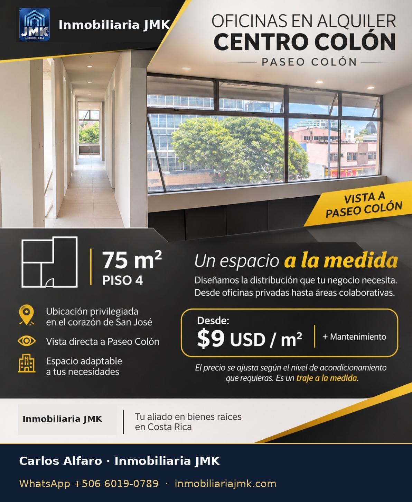
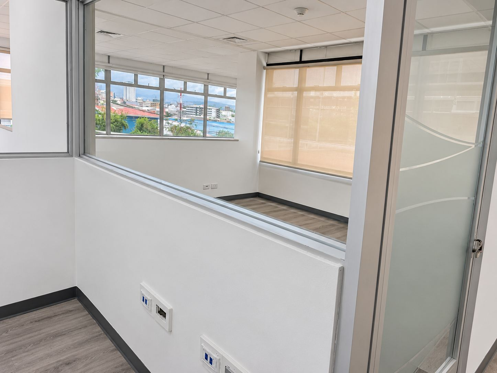
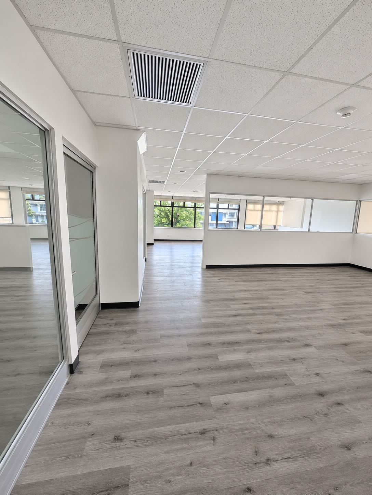
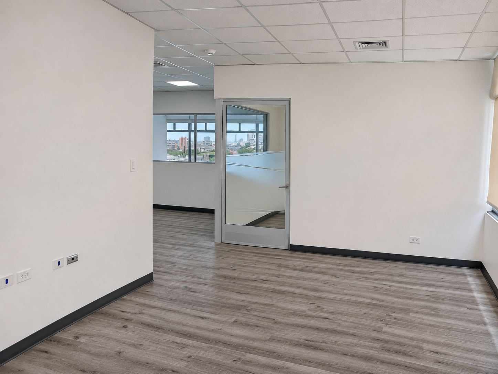
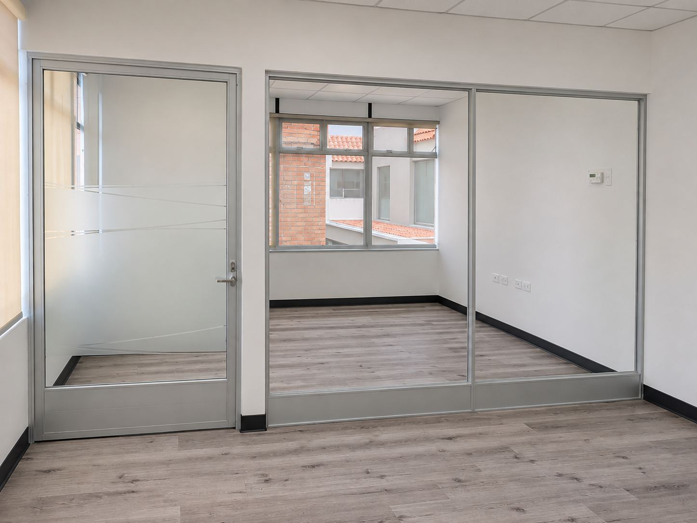
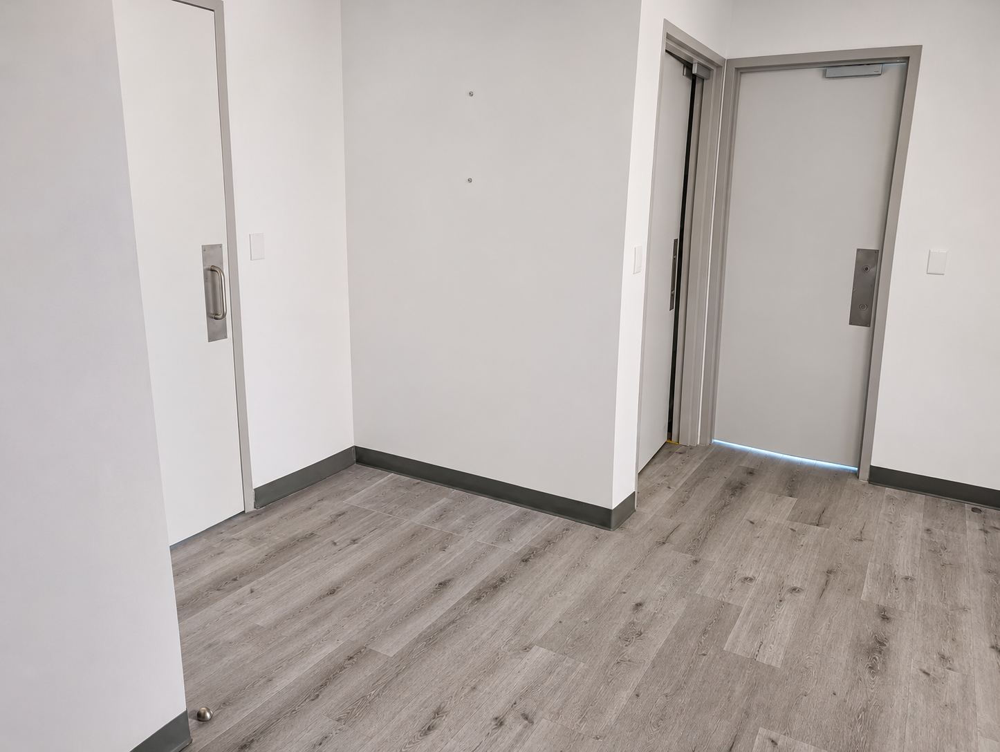

Ficha: Oficinas en Centro Colón, piso 4

Paseo Colón, en el corazón de San José · Un espacio diseñado para su negocio
| Alquiler desde (USD 9 × 75 m²) | USD 675 |
| Cuota de mantenimiento | Aparte |
El precio se ajusta según el nivel de acondicionamiento que requiera.




